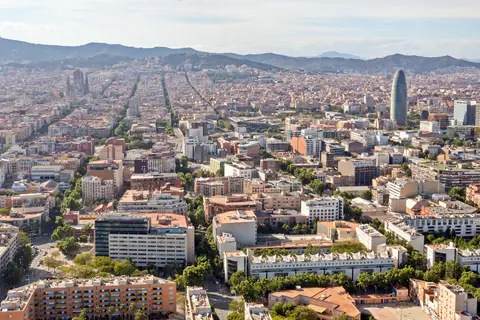

바르셀로나 도심과 지중해 전경
Photo: dronepicr
Source: Wikimedia Commons 원본 설명 페이지
License: CC BY 2.0
Changes: EXIF orientation corrected; cropped, resized and converted to WebP; metadata removed
Used in:
/daily/day-01.html/chapters/barcelona/about.html